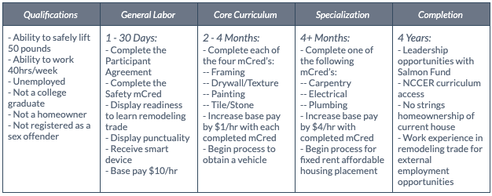
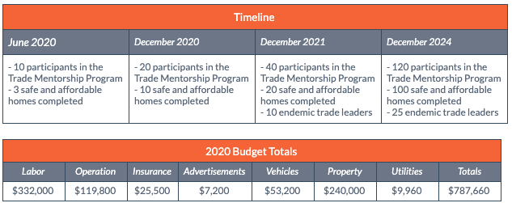
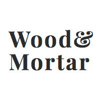

100% of profit is donated to helping wyandotte grow
Salmon Fund 501(c)3 nonprofit was started with to fund the development of Wyandotte County using endemic tradespeople, bridge relationships between existing nonprofits to unite the community, and remove bare minimum property management systems. Located in the center of targeted rehabilitation areas, WoodandMortar headquarters is the training ground for beginning participants as well as our materials warehouse. The Salmon Fund aims to secure $787,660 in investments managed in cryptocurrency escrow - SMN Tokens - to provide complete transparency and tracking throughout the Urban Improvement and Trust program. These funds will be allocated towards permanent home acquisition, tradesperson labor and construction, then transferred to participants seeking program completion. At the end of four years, each participant will have accumulated enough SMN tokens to acquire their permanent home deed. Along with upgrading a dilapidated area, we believe trade education and property maintenance will be the necessary motivation in keeping Wyandotte County beautiful.
We are designed to help the disenfranchised tackle the barriers that stand between them and success. We provide the resources to start a remodeling career by giving each participant a smart device and a vehicle. The ability to maintain their career is supported with continued training through a micro-credentials, mCred, online platform and affordable housing. Unfit, vacant properties are acquired by Salmon Fund, renovated by the participants through their employment, and given to qualifying participants to live in upon property completion at a fixed rate rent. From the time the participant receives their affordable housing to program completion, an estimated four years, the participants will gain trade experience, finance management assistance, continued education through provided NCCER curriculum, and internal leadership opportunities. The final incentive is keeping the affordable home with no strings attached, by which we mean a no mortgage, no rent, full ownership of the home the participant remodeled and is already living in.

Wyandotte County and namely, northeastern Kansas City, has been on the losing end of battle with low income. With a per capita income of only $20,192, it sits nearly $10,000 lower than its nearest income neighbor Leavenworth County and more than $22,000 lower than its only other neighbor in state, Johnson County (QuickFacts: Wyandotte County, KS 2017). This income disparity has caused other issues in the area. The first problem is homelessness. The homeless population, which was counted with a partnering out-of-state county, sits at a combined 1,798 in 2018 for both Wyandotte and Jackson Counties (Point in Time, 2018). In contrast, Johnson County had 168 recorded homeless people as of January 2018 (Homelessness in Johnson County, 2018). In 2002, homelessness per person cost taxpayers between $35,000 and $150,000 per year (Moorhead, 2002); we can only surmise how inflation and cost of living changes have altered these values as there is not more current information readily available.
The Salmon Fund is designed to help the disenfranchised as a general category, to encompass as many participants as possible. The end goal for participants is permanent homeownership and as such, disqualifies homeowners and landlords from participation. Along that same vein, reducing unemployment in Wyandotte County is a side effect of our program and already employed individuals are at a lesser need for our services. An advantage in the workforce is a college education. While we recognize that an Associate’s degree and other continued education does not guarantee employment, our participant focus is geared towards those having not completed any higher than a high school education.
General qualifications, as can be found by other employers, also exist for Salmon Fund. The nature of the work does entail a certain physical aptitude and the ability to safely lift at least 50 pounds is a necessity. Salmon Fund also requires the ability to work a 40 hour standard work week but offers flexibility for illnesses, court mandated meetings, and other schedule impediments such as possible family obligations. Registered sex offenders are prohibited from admission into this program. This combination of qualifications protects Salmon Fund, its participants, and partners while still having an enormous pool of people that can benefit from our program.
The Urban Improvement and Trust’s program will be evaluated on three primary levels. The participant information as a group, individual participant data, and community impact - property and material - will be reviewed. The analysis will include fidelity of implementation, cost effectiveness, social impact, and community response. The external evaluator will collect and analyze program documentation, metrics, focus group and interview data, and direct contact with participants where permitted. Dr. Peter Witham is acting as the lead independent reviewer to conduct a formative and summative evaluation. Reporting will include quarterly and annual reports over the course of four years.

The Salmon Fund aims to secure $787,660 in investments managed in cryptocurrency escrow - SMN Tokens - to provide complete transparency and tracking throughout the Urban Improvement and Trust involvement. These funds will be allocated towards permanent home acquisition, tradesperson labor and construction, then transferred to participants seeking program completion. At the end of four years, each participant will have accumulated enough SMN tokens to acquire their permanent home deed. Along with upgrading a dilapidated area, we believe trade education and property maintenance will be the necessary motivation in keeping Wyandotte County beautiful.
